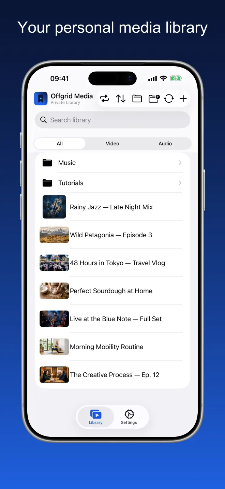
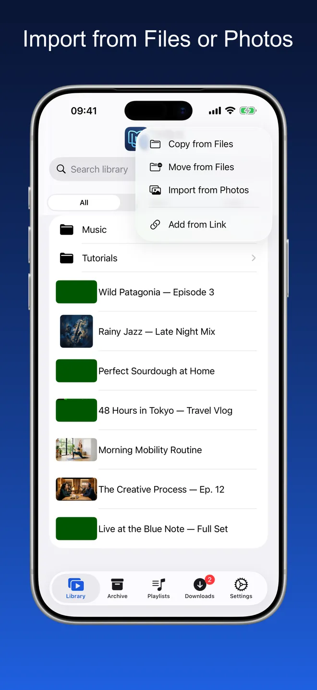
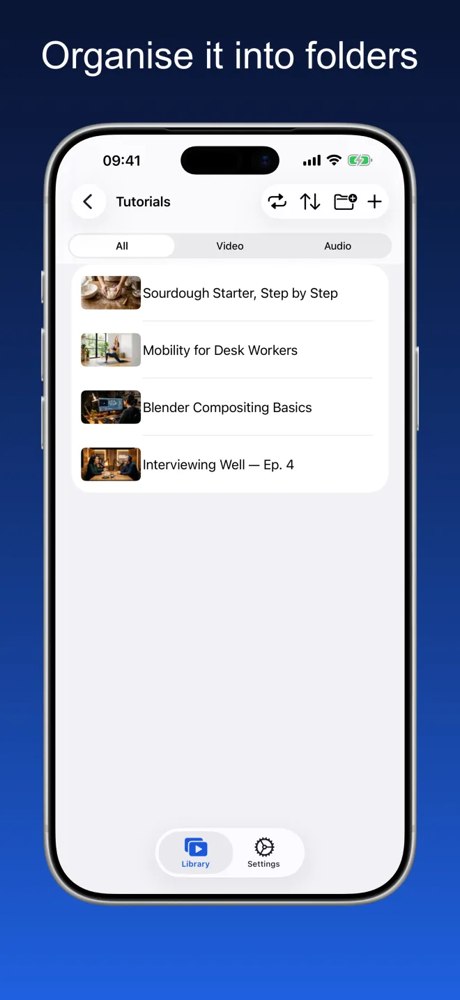
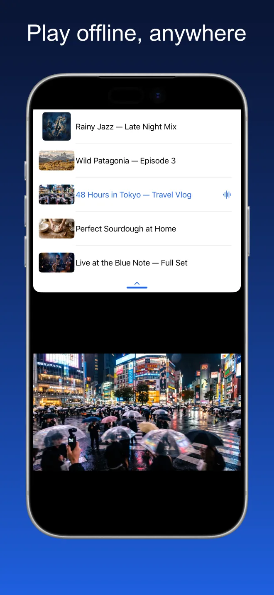
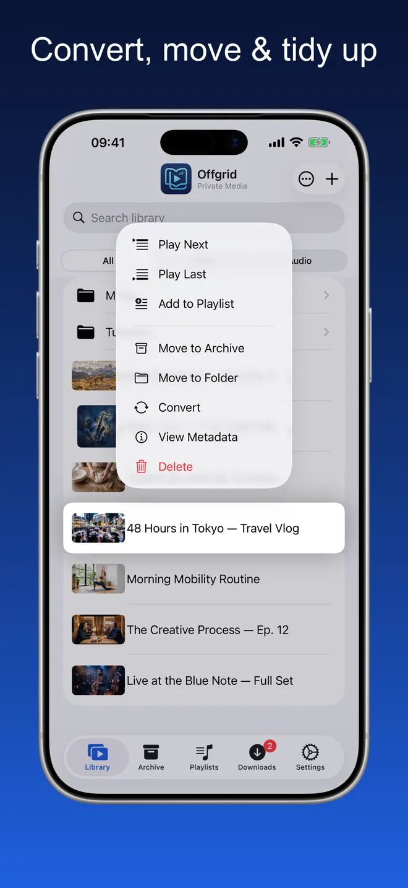
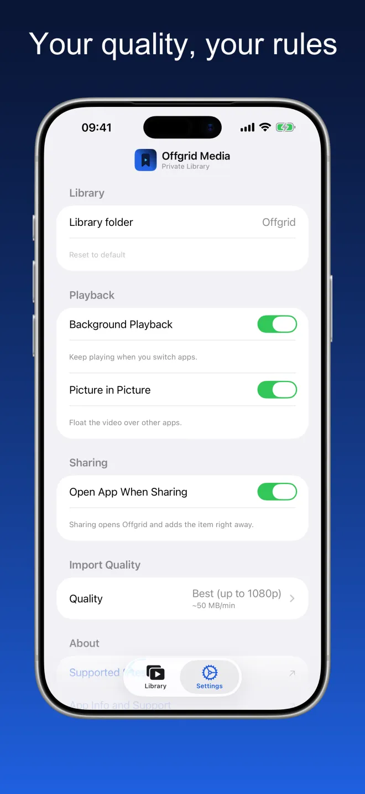

Offgrid Media · Private Library
Everything you keep,
offline.
Bring in the videos and audio you already have — from Files, from Photos, or from a link you have the right to keep — and play all of it offline, in one tidy place.
Try it. The grid is off — your library plays anyway.
One tidy place for the media you own
Folders, search, and a filter for video or audio. Thumbnails come from the file itself, album art and metadata are preserved.






Import, organise, play
Import from Files or Photos
Organise it into folders
Play offline, anywhere
A real player, not a folder of files
Everything below works with the network off.
Import from Files and Photos
Add videos and audio from iCloud Drive, from your device, or from your photo library. Everything lands in your library, ready to play.
Organise it your way
Create folders, move items between them, and search across everything you have kept. Filter by video or audio when you want to focus.
Built for offline
Once something is in your library it stays on your device. No buffering, no connection needed, nothing streamed from anywhere.
A real player
Play in sequence or shuffle, resume where you left off, queue up what comes next, and pop a video into Picture in Picture while you use other apps. Album art and metadata are preserved.
Background audio
Keep listening when you switch apps or lock your screen.
Choose your quality
Set your preferred quality once in Settings — best available, 720p, 480p, 360p, or audio only.
Chapters
Media with chapters gets a chapter list in the library and a chapter strip at the bottom of the player, so you can jump straight to the part you want.
Whole folders, in one go
Import a folder and it arrives with its subfolders intact — copy it, or move it out of the original location. Select several items at once to add them to a playlist, archive, move or delete them.
Only what you use
Switch the Archive or Playlists off in Settings and they disappear from the app. Nothing is deleted — switch them back on and everything is still there.
No account. No ads. No tracking.
Offgrid stores everything locally on your device. Nothing is uploaded, nothing is shared, and no account is required.
Nothing to collect, because there is nowhere to send it
Offgrid Media has no account and no server of its own. Its App Store privacy manifest declares no tracking and no collected data types.
Frequently asked
No. Once something is in your library it lives on your device and plays with the network off. Nothing is streamed at playback time, so there is no buffering and no connection to lose.
In a folder on your device, inside the app's own storage. You can pick a different library folder in Settings, and because the app supports the iOS Files app, you can browse the same files there. Nothing is uploaded and there is no cloud sync.
Import from Files (iCloud Drive or on-device), import from your photo library, or add from a link you have the right to keep — either paste it into the app, or use the share sheet in your browser and pick Offgrid Media. Import is the main path; adding from a link is a secondary convenience.
Yes. Turn on background audio in Settings and playback continues when you switch apps or lock your screen, with title, artwork and controls on the Lock Screen and in Control Center. Video can float over other apps with Picture in Picture. Video also plays full screen, and on iPad the app keeps playing next to another app in Split View.
No. Offgrid Media has no account, no backend, no analytics and no third-party SDKs. Its App Store privacy manifest declares no tracking and no collected data types. The only permission it asks for is notifications.
It is free. No subscription, no in-app purchases, no ads.
Please only add content you have the right to keep. Compliance with the terms of service of any platform and with applicable laws is solely your responsibility.
Your library. Your device. No signal required.
Offgrid Media is free, for iPhone and iPad, in 11 languages.